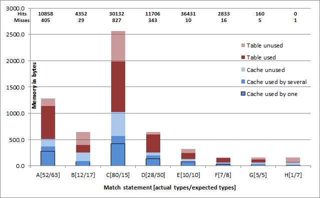

by Yuriy Solodkyy, Gabriel Dos Reis and Bjarne Stroustrup
The library source code can be downloaded here:
typeswitch-2013-02-18.zip.
NOTE: This version does not provide
support of multi-threading. Please wait until next release, we are working on a
thread-safe version. Send me an e-mail if you need it sooner.
The library is a subset of a larger pattern-matching library and only exposes the facilities discussed in the paper. It uses a smaller subset of C++11 than the general library and thus can be compiled on more compilers. It is also supposedly easier to understand since there is less code in it. Because it is a subset of a larger library, not every configuration option mentioned in config.hpp will be applicable to this subset.
To build various test cases with GCC (4.4 or later), simply invoke make. To do the same with Visual C++ (2010 or later), invoke build.bat from the command line. For the list of other supported build targets see the source of Makefile or build.bat respectively. Some of the source files are known to crash GCC 4.4.5 on my Fedora 13 box, just delete them if they also crash your compiler -- the specific problems causing the crash were reported to GCC or solved in later versions already.
If your class hierarchy has virtual functions in its root class, you can start using the library by simply including match.hpp. The only statements that would be available are: Match, EndMatch, Case and Otherwise. Other statements mentioned in the header depend on the part of the library not present here. The simplest example of library use can be found in example01.cpp. The exact example used in the paper can be found in example03.cpp and is only available under GCC at the moment because it depends on the compiler implementing C++11 initializer lists.
As a larger example you might want to look at the source code of a C++ pretty printer we implemented for the Pivot framework.
There have been few discussions of the library on the internet with some relevant questions asked/answered:
Synthetic tests were designed to compare the run-time performance of visitors and type switching in a setting where the actual pay-load functionality is the minimal (i.e. just returning a case number here), while the most of the time is spent on detecting the case. There are 24 test configurations, which are a combination of the following 4 parameters described in details in the paper:
The result of the timing experiment can be seen in Excel Spreadsheet Timing.xlsx. Embedded version of the file can be seen below, however some features/information is not available when viewing in browser, so we suggest you download the file locally.
Please feel free to edit the four values that are allowed to be editable below to see the amount of cycles spent per iteration of a corresponding test by visitors and type switch. The first value can be in range 1-7 and controls the compiler configuration used for tests. The 3 other boolean parameters represent the 3 last parameters described above: Encoding, Syntax and Forwarding. The numbers hidden by the chart are copied from the corresponding sheet below by choosing compiler configuration. You can see it directly by clicking on the corresponding sheet.
All the tests have been performed in the diagnostic boot of Windows 7, in which the operating system loads only the bare minimum of drivers and services. This limits the effect of other applications on the timed application as well as makes the timing numbers very sustainable: i.e. you can see that each test of a given configuration was performed 3 times, with numbers representing the amount of cycles per iteration almost always beeing the same or different by 1.
The C++ pretty printer that we implemented using both type switching (open encoding) and visitor design pattern was ran on a set of standard header files to print them out. The produced output of both program was byte-to-byte the same.
The running times for the entire execution of the printer (not including loading and termination of the application or parsing of the input file) are presented below for two consequitive experiments. The numbers correspond to 2467841 units per 1 second. X indicates the winner. The general observation is that on small files (e.g. those from C run-time library and few small C++ files) visitors win because the total number of nodes in AST and thus calls does not justify our set-up calls. We win on all the large standard headers, where the total number of calls can reach numbers indicated below in the memory usage chart. The rightmost column lists lines of codes in each input file after preprocessing and removing any empty lines, #line directives and #pragmas.
Visitor-based implementation of pretty printer is faster on files of 44--588 lines of code, with average 136 lines per those inputs, where visitors win. On these input files it is faster by 1.17%--21.42% with an average speed-up of 8.75%. Open type switch based implementation of pretty printer is faster on files of 144--9851 lines of code, with average 3497 lines per those input files, where open type switch wins. On these inputs it is faster by 0.18% -- 32.99% with an average speed-up of 5.53%.
EXPERIMENT 1 # EXPERIMENT 2 #
Visitors Input file TypeSwitch # Visitors Input file TypeSwitch # Input file LOC
================================== # ================================== # =================
168609 | | algorithm |X| 165256 # 172249 | | algorithm |X| 165018 # algorithm 5467
2022 |X| cassert | | 2201 # 2031 |X| cassert | | 2211 # cassert 47
3989 |X| cctype | | 4227 # 4072 |X| cctype | | 4406 # cctype 98
2182 |X| cerrno | | 2495 # 2230 |X| cerrno | | 2498 # cerrno 50
2939 |X| cfloat | | 3279 # 3010 |X| cfloat | | 3217 # cfloat 61
1899 |X| climits | | 2205 # 2030 |X| climits | | 2456 # climits 44
14830 |X| cmath | | 15740 # 15274 |X| cmath | | 15452 # cmath 338
2838 |X| csetjmp | | 3162 # 3045 |X| csetjmp | | 3225 # csetjmp 65
2534 |X| csignal | | 2803 # 2626 |X| csignal | | 2793 # csignal 53
751 |X| cstdarg | | 910 # 747 |X| cstdarg | | 907 # cstdarg 51
2339 |X| cstddef | | 2682 # 2542 |X| cstddef | | 2614 # cstddef 55
8505 |X| cstdio | | 8828 # 8896 | | cstdio |*| 8623 # cstdio 195
7810 |X| cstdlib | | 7938 # 8399 | | cstdlib |*| 7794 # cstdlib 195
6412 | | cstring |X| 6208 # 6559 | | cstring |X| 6240 # cstring 144
4184 |X| ctime | | 4511 # 4498 |X| ctime | | 4584 # ctime 104
17970 | | cwchar |X| 17030 # 18322 | | cwchar |X| 17204 # cwchar 430
5313 |X| cwctype | | 5797 # 5428 |X| cwctype | | 5855 # cwctype 98
179706 | | deque |X| 175360 # 186641 | | deque |X| 176304 # deque 5477
4551 |X| exception | | 4859 # 4619 |X| exception | | 5044 # exception 107
15926 |X| functional | | 16286 # 16069 |X| functional | | 16385 # functional 588
44995 | | iosfwd |X| 36451 # 45638 | | iosfwd |X| 36346 # iosfwd 981
76075 | | iterator |X| 72553 # 77843 | | iterator |X| 73809 # iterator 2356
52246 | | limits |X| 51984 # 54408 | | limits |X| 51802 # limits 1521
190473 | | list |X| 186927 # 195184 | | list |X| 186792 # list 5981
102173 | | memory |X| 98085 # 103635 | | memory |X| 98894 # memory 3171
5789 |X| new | | 6077 # 8079 | | new |*| 6075 # new 156
79381 | | numeric |X| 79238 # 78918 | | numeric |X| 76705 # numeric 2481
314098 | | queue |X| 300355 # 310009 | | queue |X| 299821 # queue 9851
181218 | | stack |X| 176946 # 181784 | | stack |X| 180710 # stack 5563
132298 | | stdexcept |X| 131237 # 130425 | | stdexcept |X| 127400 # stdexcept 3907
5680 |X| typeinfo | | 6125 # 5718 |X| typeinfo | | 6191 # typeinfo 145
41860 | | utility |X| 39939 # 40407 | | utility |X| 40119 # utility 1095
82865 | | valarray |X| 80094 # 80487 | | valarray |X| 80185 # valarray 1551
197234 | | vector |X| 188669 # 194703 | | vector |X| 188664 # vector 5985
================================== # ================================== # =================
The picture below represents memory usage as well as cache hits and misses for the run of our pretty printer on 'queue' standard library header (it has the largest LOC after preprocessing in our test set).

There were 8 match statements in it marked A-H. The info [N/M] next to the letter indicates the actual number of different types (actually vtbl-pointers) that came through that match statement - N; and the amount of case clauses the match statement had - M (we use it as an estimate of types). N is also the number of cases the corresponding match statement had to be executed sequentially (instead of a direct jump).
Memory is measured in bytes. The blue part corresponds to our cache and the maroon - to the hash table that keeps mapping of elements to necessary info. Transparent parts of both colors indicate the allocated extra memory that is not holding any data. The black box within the blue part also indicates the amount of entries in the cache that are allocated for only one vtbl pointer and thus never result in a cache miss. The non-transparent part without black box represents the percentage of vtbl pointers that have to share their cache entry with at least one other vtbl-pointer and thus may result in collisions during access.
The actual number of hits and misses for each of the match statements is indicated on top of the corresponding column. The sum of them is the total amount of calls made. Hits indicate situation when we found entry in cache and didn't have to make roundtrip to the hash-table to get it. Misses indicate the number of cases during actual run we had to pick the entry from the hash table and update the cache with it. The number of misses is always larger then or equal to N.
The last 3 match statements have memory pre-allocated for 8 types - that's the minimum size we preallocate, even when only one type will show up. Just an internal optimization. The rest of the entries allocate the amount of memory proportional to the larger of the two numbers M and N (actually the closest power of 2 after that maximum). The reason for that is also an internal optimization to avoid cache reconfigurations.
The table doesn't have to be hash table and can be implemented with any other container i.e. sorted vector, map etc. that let us find quickly by a given vtbl-ptr the data associated with it. If we implement it with sorted vector, the red part will shrink to only the non-transparent part.
The table below presents side-by-side comparison of the code implementing the C++ pretty-printer using visitors (left) and pattern-matching (right).
Both files were adopted from their original form in order to render as little differences as possible in order to let the reader see the exact correspondence in functionality. In particular the following changes were made:
The files were 798 lines (pattern matching) and 893 lines (visitors) before these changes were applied, making the pattern matching code about 11% shorter. Actually compared files are 719 lines long (pattern matching) and 732 lines long (visitors). Byte size of the pattern-matching source file is 34761 and visitors file 40464 bytes, making the pattern-matching source about 14% smaller.
| printer_visitors.cpp | Visitors based implementation (left file in comparison) |
| printer_matching.cpp | Pattern-matching based implementation (right file in comparison) |
| visitors.hpp | Excerpt from Pivot's header with visitor definition |
| match_ipr.hpp | Definition of pattern-matching bindings |